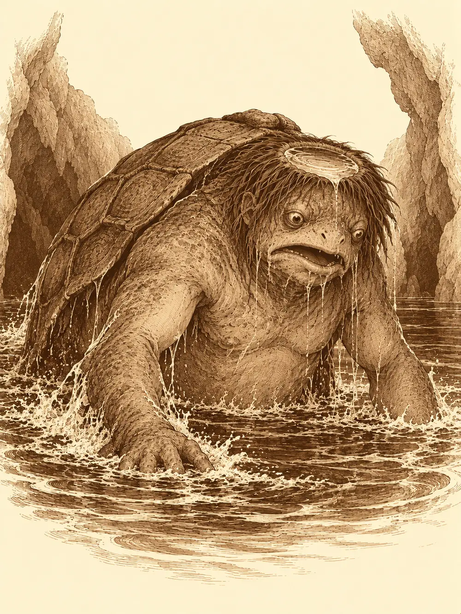

Capítulo 10
Sopa de tortuga
Libro I · Los cazadores de Ukio
El erudito volvió a Ukio con el traje impecable y el libro bajo el brazo, como si no hubiera pasado el tiempo. Había estado en la universidad, contó, intentando llegar a un acuerdo con el nekomata e informando a su patrón y a quien dirigía la universidad de todo lo que había visto: que los yokai existían, que eran fascinantes y que merecía la pena estudiar lo que podían ofrecer. El gato, por lo visto, no se había dejado convencer de mudarse. Seguía dormido sobre la chimenea de Kitaro, con una pata colgando, mientras Peluso daba vueltas por el suelo recogiendo y soltando polvo.
Akira había vuelto también. Había ido a visitar a su familia, dijo, en el plano astral, y nadie le preguntó cómo se llegaba hasta allí.
Sun Gukon, en cambio, no se había movido de la comarca. Andaba por ahí, explicó, de correrías, y cuando alguien insinuó que esas correrías tenían farolillos rojos en la puerta, el monje no lo desmintió.
Eran las cinco de la tarde y estaban en plena sobremesa cuando les llegó una música de fuera, un redoble alegre que no se había oído nunca en Ukio. En la calle se había juntado una multitud, y en el centro de la multitud, un enano fornido con pinta de cazador tocaba un tambor y contaba en voz alta alguna hazaña.
"Y así fue como terminé con aquel espíritu. Acabé todo sudado, pero fue la mejor experiencia de mi vida".
Las mujeres se reían y le tocaban los brazos. Sun lo miró desde la puerta con el ceño fruncido. Llevaba semanas cultivando la atención de aquellas mozas y ahora llegaba un enano con un tambor y se las llevaba de calle.
"Vienes a nuestro pueblo sin decir ni buenas tardes", le soltó. "Y te atreves a llevarte a las mozas que tanto tiempo me ha costado conquistar".
"Si tanto tiempo te ha costado, será porque eres feo".
Alguien le comentó al erudito, sin bajar mucho la voz, que al fin y al cabo el monje y el enano eran igual de peludos. El enano lo oyó. Luego llamó orco a Akira, que medía cerca de dos metros, le preguntó si tenía la misma inteligencia que el mono, y aquello terminó de liarse.
Desde la puerta de la taberna, el nekomata asomó la cabeza y le dijo algo a Sun en silvano, con voz grave.
"¿Cómo que el pueblo es vuestro? El pueblo es mío".
El monje le contestó que el gato era el primero de su lista y el enano, el segundo.
Un hombre llegó corriendo desde el norte, sudoroso, y los miró a todos con cierta desconfianza, incluido el gato.
"¿Vosotros sois los cazadores?".
"Somos los cazadores".
"¿Os interesa un trabajo? Pagaría bien".
Sacó una bolsa de cuero y contó: cincuenta monedas de oro para cada uno. Era pescador. Necesitaba salir a faenar al mar de Kyushu y no se atrevía a hacerlo solo, porque a veces aparecían criaturas extrañas. Él había visto sombras grandes bajo el agua, y le habían contado historias de algo colosal que volcaba barcos y se comía a los tripulantes. Eso no lo había visto nunca, se apresuró a añadir. Pensaba quedarse cerca de la costa.
Aceptaron. Antes de salir pasaron por la herrería y la tienda del alquimista, y Akira compró unos pergaminos que se guardó sin decir para qué eran.
El barco del pescador era grande, de una sola cubierta, con una parte techada donde había camas, una mesa y cajas de cebos y aparejos. Era su casa. Se alejaron del puerto a media tarde, con Ukio cada vez más pequeño a sus espaldas. Hacia el sur, muy lejos, se adivinaba una costa difuminada que alguien llamó Brunamonti.
"Las criaturas suelen salir de noche", les advirtió el pescador. "Esos pequeñitos que parecen tortugas. Antes de las ocho deberíamos volver".
El enano sacó el tambor. El erudito le explicó con mucha paciencia que el agua transmite el sonido y que los peces huyen del ruido. El enano le preguntó si en su tierra no le habían enseñado que no se despierta a quien duerme la siesta, y Sun, que dormitaba sobre un barril, contestó que él estaba durmiendo y que se callaran los dos. Akira se rio.
Mientras discutían, alguien gritó en la borda.
Cuando se volvieron, el pescador ya no estaba. Su caña flotaba en el agua, junto al barco, y la superficie todavía se movía en círculos.
Sun se ató una cuerda a la cintura, le dio el otro extremo a alguien y se tiró al agua. Allá abajo el mar era más claro de lo que parecía desde arriba. Vio al pescador soltando burbujas por la boca, debatiéndose, y alrededor de él unas criaturas pequeñas que nadaban muy deprisa y lo arrastraban hacia un agujero en el fondo. Se metieron en él. La cuerda se tensó. Sun no llegaba.
Subió jadeando.
"Algo acaba de llevarse al pescador a una cueva submarina. Aquí pueden pasar dos cosas: o vamos a buscarlo, o acabamos de conseguir un barco".
La idea no le pareció mal a nadie durante unos instantes. El enano dijo que no le caía bien el mono, pero que su lógica era impecable. El erudito, que algo sabía de leyes, les explicó que para quedarse con un barco abandonado hacían falta años, que el hombre estaba registrado como dueño y que, en cambio, si lo rescataban, podían negociar con él una parte del barco, el usufructo, por ejemplo. Akira sacó entonces los cuatro pergaminos que había comprado en Ukio.
"Burbujas de aire", dijo. "Para respirar bajo el agua".
Los leyeron uno por uno, y alrededor de la cabeza de cada uno se formó una burbuja transparente, temblorosa, que olía a nada. Se tiraron por la borda.
Siguieron a Sun hasta el agujero. Era un túnel que se estrechaba, serpenteaba y luego volvía a subir, hasta que salieron a la superficie dentro de una gruta. El techo era bajo. El aire olía a pescado podrido, a fango, a algo peor debajo de todo eso. Akira encendió una antorcha chasqueando los dedos.
Junto a un riachuelo subterráneo había una montaña de pescado, buena parte en descomposición. Dos kappa, de espaldas, lo clasificaban: uno apilaba los peces sobre sí mismo para transportarlos, el otro descartaba los que estaban demasiado podridos. Por un túnel lleno de agua llegó un tercero. Se llevaron la carga río abajo.
El erudito y Akira se volvieron invisibles y se metieron en el agua para seguirlos. Una ilusión le apagó a Sun los brillos de la ropa para que pasara desapercibido. El enano, mientras tanto, fue colocando pequeños montones de piedras en las bifurcaciones, para que si alguien venía detrás tropezara y lo oyeran.
Sun y el enano tomaron un camino seco. Empezaron a encontrar manchas de sangre en la roca y, más adelante, kappa muertos. Tenían el caparazón aplastado, hundido como si algo los hubiera estrujado hasta reventarlos. A uno le había estallado la cabeza.

Al fondo había un montón de cadáveres. Huesos de yokai, de humanos, de cosas que no reconocían, con jirones de carne todavía pegados. Y entre ellos se movía algo largo y oscuro, con cuerpo de serpiente y cabeza de mujer, que arrancaba trocitos de carne de los huesos.
El enano la reconoció. Había leído sobre ellas: una nure-onna. Se presentaban como damas hermosas que pedían ayuda, y cuando alguien se acercaba a socorrerlas lo abrazaban con su cuerpo de serpiente hasta partirlo, y luego se lo tragaban. Por eso los kappa estaban como estaban.
Los otros dos llegaron bajo el agua por el riachuelo y se asomaron desde abajo.
El enano preparó la emboscada. Extendió a su alrededor una burbuja de silencio, para que no se oyeran sus pasos, y lanzó una botella hacia el otro lado de la cueva. Con un gesto, a distancia, le hizo saltar el tapón. El estallido rebotó por toda la gruta, y la nure-onna se giró hacia el ruido.
Atacaron todos a la vez. Sun se lanzó a golpes contra el cuerpo de la serpiente, pero la cola se le enroscó alrededor y lo levantó del suelo, y la cabeza de mujer se le acercó a la cara y le hincó los dientes en el hombro. El erudito adoptó una forma terrible, de hueso y espanto. El enano soltó el silencio y le contó a la criatura algo que solo ella pudo oír, y la nure-onna empezó a reírse. Se le doblaron los anillos, cayó al suelo sacudida por carcajadas que no podía contener, y aun así no soltaba al monje.
Akira le apoyó una mano en la espalda a Sun, como había hecho una vez en el patio de los pescadores, y el monje volvió a sentir aquel calor subiéndole por el pecho. Abrió la boca y escupió fuego. El erudito intentó saltar el riachuelo para acercarse, resbaló y cayó al agua, salió empapado y siguió atacando, y su sola presencia asustó a la serpiente. Entre las llamas de Sun y las de Akira acabaron con ella. Parte del fuego le chamuscó al monje el pelo de la cabeza.
"Con lo que me cuido yo el pelo".
El pescador no estaba entre los huesos. Ninguno de aquellos cuerpos era reciente. El enano rebuscó entre las calaveras, eligió una de rasgos finos y dientes puntiagudos y pidió la cabeza de la nure-onna. Las calaveras le servían para su magia, explicó, como a otros les servían las velas o las bolas de cristal. Sun cortó unas lonchas de la serpiente, que ya estaba bastante asada, y las guardó para el gato.
El otro camino los llevó a una gruta más profunda con una poza de agua oscura al fondo. Allí estaban los dos kappa de antes. Uno tiraba pescado a la poza. El otro canturreaba junto a un hombre atado, de espaldas a ellos. El pescador.
Sun no esperó. Se lanzó sobre el kappa que tiraba pescado y lo abrazó con todas sus fuerzas. La criatura chilló y se metió de golpe dentro del caparazón, y el monje se quedó abrazado a una concha cerrada a cal y canto. El otro kappa se dio la vuelta, los vio, y el pescador también gritó, más por alivio que por miedo.
"¡Cuánto habéis tardado!".
Akira hizo aparecer una mano invisible que flotó hasta el cautivo, le palpó la cara para encontrarlo y empezó a desatarle los nudos. El enano le contó un chiste al kappa que quedaba libre, y la criatura cayó de espaldas sobre el caparazón, moviéndose como un balancín y riéndose sin poder parar. Le tiraron una antorcha encima.
Entonces la poza empezó a burbujear. Donde habían caído los peces el agua hirvió, se abombó, y salió un kappa enorme, gigantesco, con un caparazón del tamaño de una barca y una mirada torpe y hambrienta.
Lo que pasó después fue una batalla y una cocina al mismo tiempo. El kappa pequeño seguía encerrado en su concha, en brazos de Sun, y alguien tuvo la idea de dejarlo en el suelo y prenderle fuego. Por los agujeros del caparazón empezó a salir humo. El enano echó dentro un poco de pan duro de sus raciones; alguno añadió especias. Luego el enano tapó los agujeros con barro para que el calor no se escapara, como una olla cerrada.
Akira lanzó fuego contra los enemigos y alcanzó también a Sun, que soltó un improperio. La mano invisible terminó de liberar al pescador, que se arrastró hasta una esquina a mirarlo todo desde allí. El erudito adoptó rasgos de gato, los ojos amarillos, las garras, algo del nekomata en la sonrisa, y el kappa que se reía en el suelo se aterrorizó al verlo. Intentó huir, y no llegó lejos.
El enano le contó otro chiste al gigante, que se desplomó riendo a carcajadas, incapaz de levantarse. Sun agarró el caparazón donde se estaba cocinando el pequeño y se lo lanzó a la cabeza. Le dio de lleno. El gigante cayó de espaldas, y el hueco de su coronilla se volcó y empezó a vaciarse de agua. Sus movimientos se volvieron torpes, lentos, casi tontos.
En algún momento el enano sacó una daga y la daga se rio. Todos se quedaron mirándolo. El enano les enseñó la vaina: tenía dentro un pequeño muelle que rozaba la hoja al desenvainar y sonaba como una risita.
El gigante seguía en el suelo. Akira levantó la mano y soltó una descarga que le atravesó el caparazón de lado a lado. Se quedó dando vueltas sobre su concha hasta que dejó de moverse.
Del caparazón pequeño, sellado con barro, salía un hilo de vapor y un olor que hizo salivar a todo el mundo. El pescador se acercó despacio, olisqueando.
"Qué bien huele aquí".
Antes de servir la sopa, el enano y Sun intentaron negociar. Si el pescador quería sopa, que les diera el barco. O setenta y cinco monedas por cabeza, y entonces ellos le daban la sopa. El pescador los miró espantado.
"El barco es mi casa".
El erudito se adelantó, alisándose la chaqueta empapada.
"Para que estemos todos contentos. El barco seguirá siendo suyo. Usted conserva su propiedad. Pero los frutos que produzca, lo que se saque con él, podrían ser nuestros, en parte, para financiar los rescates que hagamos".
El pescador lo pensó un momento. Aquel hombre del traje le parecía más de fiar que el enano.
"Me parece un buen trato".
Le estrechó la mano. Luego sacó de algún bolsillo un cuenco pequeño y lo tendió hacia el caparazón.
Comieron allí mismo, en la gruta, alrededor de la concha humeante. Estaba buena, la verdad, con el pan duro reblandecido y las especias y aquel sabor a río y a fuego. El pescador quiso la receta. El erudito arrancó una hoja de su diario y la escribió con buena letra. Uno de ellos quiso quedarse con el caparazón del gigante, el del agujero, y se puso a separarlo del cuerpo.
El pescador les pagó lo acordado, cincuenta monedas de oro a cada uno. Y en la orilla de la poza el caparazón de la sopa quedó vacío y todavía caliente, con el barro agrietado como la tapa de una olla.